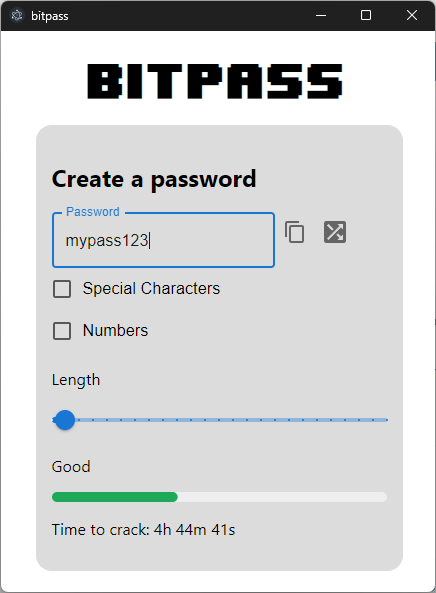
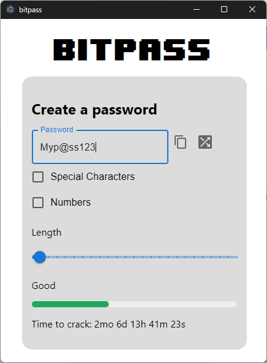
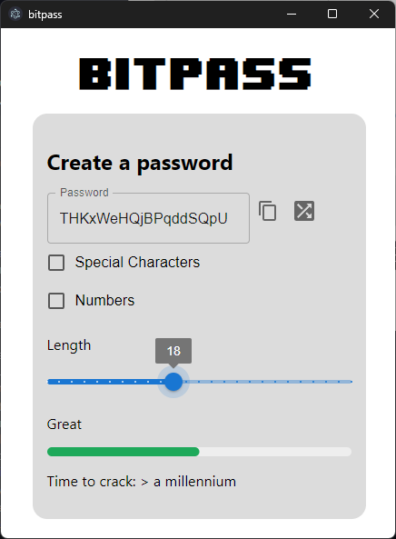
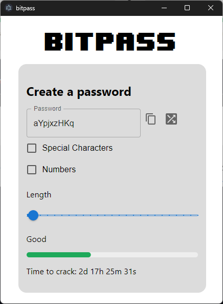

Evaluate the strength and security of passwords against brute force attacks.

Generate passwords with different levels of complexity, including varying lengths and character sets.

Explore the factors that contribute to password strength and security as you utilize our tool.
GitHub Repository
Technologies Utilized
Electron · React · Javascript · Tailwind CSS · HTML